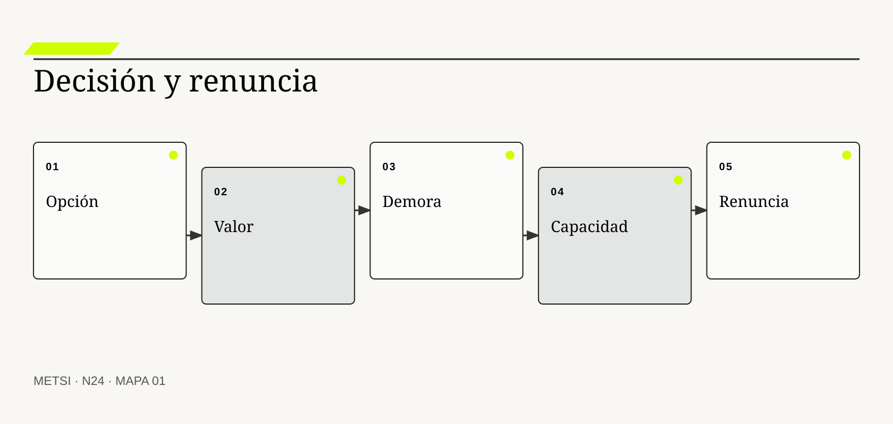
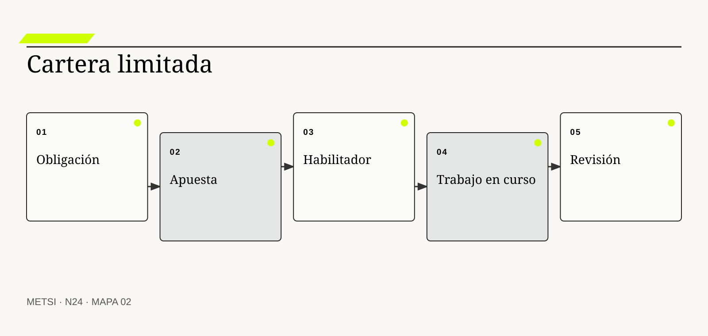
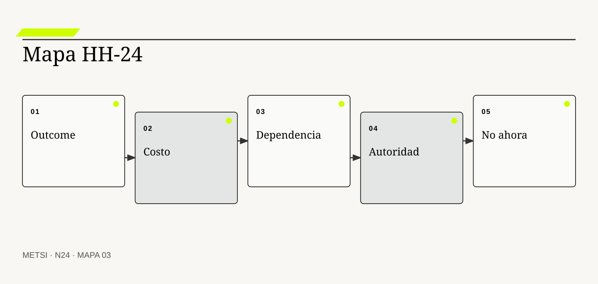

Don Reinertsen
Desarrolló economía del flujo y costo de demora.

N24 entiende la priorización como renuncia explícita y revisable, articulando valor situado, costo de demora, capacidad, obligaciones, dependencia y…
Priorizar es renunciar: valor, costo de demora y límites
Ruta de lectura: problema, distinciones, decisiones, prueba, transferencia y preparación.
Nota. SIN NUM. identifica aparatos de orientación y referencia.
Seis voces para ampliar, contrastar y discutir N24.
Desarrolló economía del flujo y costo de demora.

Mostró cómo las restricciones organizan desempeño sistémico.
Formalizó la relación entre trabajo en curso, throughput y tiempo.

Aplicó políticas explícitas y clases de servicio al trabajo de conocimiento.

Conectó portafolio, producto y flujo de valor.

Integra valor, portafolio y adaptación de decisiones.
N24 no resume estas fuentes ni las convierte en receta. Las pone en tensión para construir juicio profesional.
¿Cómo decidir qué no hacer cuando todas las iniciativas pueden narrarse como valiosas y cada demora distribuye consecuencias distintas?

N24 entiende la priorización como renuncia explícita y revisable, articulando valor situado, costo de demora, capacidad, obligaciones, dependencia y distribución de…
Hotel Horizonte reúne diecisiete pedidos para el próximo trimestre. Cada área marca el suyo como crítico: campaña, cerraduras, reportes, accesibilidad, conciliación, aplicación y automatización. La matriz asigna puntajes y termina con doce iniciativas casi empatadas.
El problema no es falta de fórmula. Nadie declaró qué resultado prevalece, qué obligación limita la comparación, quién absorbe la demora ni qué capacidad se libera al decir no. El ranking vuelve numérico un desacuerdo que sigue intacto.
Priorizar es renunciar de manera explícita y revisable. Significa asignar recursos escasos a una opción y aceptar las consecuencias de postergar, reducir o retirar otras. Valor no es una propiedad intrínseca; depende de población, momento, mecanismo, riesgo y estrategia.
El equipo separa obligaciones de apuestas, calcula costo de demora por escenario, identifica dependencias y limita trabajo en curso. Accesibilidad no compite como feature opcional. La campaña espera porque amplificaría una promesa frágil. Una mejora pequeña de conciliación avanza porque libera capacidad operativa para el resto.
La decisión se vuelve defendible cuando nombra beneficiarios, perjudicados, oportunidad perdida, incertidumbre y fecha de revisión. El backlog deja de ser depósito infinito.
N24 recibe slices de HH-23 y enseña a elegir entre ellos sin esconder renuncias detrás de urgencia, puntaje o autoridad jerárquica.
HH-24 clasifica opciones por obligación, protección, outcome, aprendizaje y habilitación. Para cada una registra costo de demora, capacidad consumida, dependencia, reversibilidad y población afectada. La cartera limita iniciativas activas y conserva una lista explícita de no ahora, no así y no hacer.
N24 entiende la priorización como renuncia explícita y revisable, articulando valor situado, costo de demora, capacidad, obligaciones, dependencia y distribución de consecuencias.
N23 deja evidencia y decisiones abiertas que N24 utiliza sin reabrir su contenido. N24 entiende la priorización como renuncia explícita y revisable, articulando valor situado, costo de demora, capacidad, obligaciones, dependencia y distribución de consecuencias.
N25 recibirá una cartera limitada y estudiará cómo fluye realmente el trabajo. N24 no optimiza todavía colas, lote ni feedback en ejecución.
Reinertsen, D. G. explica economía de colas, lotes y costo de demora. En N24, ese aporte pone a prueba decisiones concretas y no funciona como respaldo ornamental. Su alcance se conserva en N24: ninguna referencia sustituye la evidencia del caso ni la autoridad necesaria para intervenir.
Goldratt, E. M. y Cox, J. muestran cómo una restricción gobierna el desempeño del sistema. En N24, ese aporte pone a prueba decisiones concretas y no funciona como respaldo ornamental. Su alcance se conserva en N24: ninguna referencia sustituye la evidencia del caso ni la autoridad necesaria para intervenir.
Little, J. D. C. formaliza la relación entre trabajo en curso, throughput y tiempo. En N24, ese aporte pone a prueba decisiones concretas y no funciona como respaldo ornamental. Su alcance se conserva en N24: ninguna referencia sustituye la evidencia del caso ni la autoridad necesaria para intervenir.
Anderson, D. J. aporta límites, políticas y gestión evolutiva del flujo. En N24, ese aporte pone a prueba decisiones concretas y no funciona como respaldo ornamental. Su alcance se conserva en N24: ninguna referencia sustituye la evidencia del caso ni la autoridad necesaria para intervenir.
Kersten, M. conecta financiación, producto y flujo de valor. En N24, ese aporte pone a prueba decisiones concretas y no funciona como respaldo ornamental. Su alcance se conserva en N24: ninguna referencia sustituye la evidencia del caso ni la autoridad necesaria para intervenir.
Project Management Institute ordena decisiones de cartera, valor y alineación. En N24, ese aporte pone a prueba decisiones concretas y no funciona como respaldo ornamental. Su alcance se conserva en N24: ninguna referencia sustituye la evidencia del caso ni la autoridad necesaria para intervenir.
Project Management Institute provee principios y dominios que deben adaptarse al contexto y al valor. En N24, ese aporte pone a prueba decisiones concretas y no funciona como respaldo ornamental. Su alcance se conserva en N24: ninguna referencia sustituye la evidencia del caso ni la autoridad necesaria para intervenir.
Kanban Guides aporta límites, políticas y gestión evolutiva del flujo. En N24, ese aporte pone a prueba decisiones concretas y no funciona como respaldo ornamental. Su alcance se conserva en N24: ninguna referencia sustituye la evidencia del caso ni la autoridad necesaria para intervenir.
Google Cloud aporta evidencia sobre capacidades de entrega y desempeño. En N24, ese aporte pone a prueba decisiones concretas y no funciona como respaldo ornamental. Su alcance se conserva en N24: ninguna referencia sustituye la evidencia del caso ni la autoridad necesaria para intervenir.
ISO/IEC establece requisitos para gobernar sistemas de gestión de servicios. En N24, ese aporte pone a prueba decisiones concretas y no funciona como respaldo ornamental. Su alcance se conserva en N24: ninguna referencia sustituye la evidencia del caso ni la autoridad necesaria para intervenir.
OECD orienta servicios públicos hacia necesidades y consecuencias humanas. En N24, ese aporte pone a prueba decisiones concretas y no funciona como respaldo ornamental. Su alcance se conserva en N24: ninguna referencia sustituye la evidencia del caso ni la autoridad necesaria para intervenir.
European Union conecta uso de inteligencia artificial con riesgo, obligaciones y supervisión. En N24, ese aporte pone a prueba decisiones concretas y no funciona como respaldo ornamental. Su alcance se conserva en N24: ninguna referencia sustituye la evidencia del caso ni la autoridad necesaria para intervenir.

Prioridad es una relación de precedencia entre opciones bajo recursos, objetivos y límites concretos. La definición fija el objeto de decisión. Si el equipo de N24 no puede expresar qué compromiso organiza, la categoría funciona como etiqueta y no como instrumento.
No es importancia absoluta, urgencia declarada ni posición fija en una lista. La distinción evita que una palabra familiar oculte otro mecanismo. En N24, confundirlos cambia qué se observa, qué se acepta como avance y quién debe intervenir.
En prioridad, el recorrido causal debe mostrar qué condición habilita la acción, qué transformación ocurre y quién absorbe el resultado. Ordena compromisos cuando hacer una opción posterga o impide otra. Si un salto depende sólo de una explicación oral, la estrategia todavía no puede gobernarlo.
La evidencia relevante para prioridad no se limita al resultado promedio. Se sostiene con criterio, capacidad, consecuencia y fecha de revisión. N24 busca además casos negativos, diferencias entre poblaciones y señales de que la explicación elegida podría ser insuficiente.
Ejemplo. Accesibilidad precede a campaña aunque ambas produzcan valor. En N24, el episodio vuelve visible la relación entre ritmo, autoridad, evidencia y capacidad de reparación.
El tradeoff central de prioridad aparece entre anticipar y preservar opciones. Anticipar puede reducir coordinación y también fijar una premisa prematura; preservar opciones puede producir aprendizaje y también demorar una protección necesaria. La elección debe declarar cuál de esos costos acepta, durante cuánto tiempo y para quién.
La auditoría de prioridad termina con una pregunta de uso: ¿qué podría decidir ahora una persona que antes no podía? En N24, la respuesta debe nombrar una acción, una restricción y una evidencia, no sólo una comprensión mejorada.
Operacionalizar prioridad requiere asignar una unidad observable. El equipo define qué episodio contará, desde qué momento, con qué población y bajo qué fuente. Después compara al menos un caso ordinario con otro que fuerce excepción. Esta precisión en N24 evita que una conclusión general se sostenga sólo en ejemplos convenientes.
La decisión profesional no termina en adoptar prioridad. Se compara una ruta principal con una explicación rival, se explicita quién queda expuesto y se conserva un modo de revisar. Una prioridad sin renuncia simultánea no gobierna trabajo. El límite forma parte del diseño y no una nota posterior.
Renunciar es decidir no hacer, no ahora o no de esa manera y asumir sus efectos. Conviene comenzar por su función profesional. Si el equipo de N24 no puede expresar qué compromiso organiza, la categoría funciona como etiqueta y no como instrumento.
No equivale a olvidar, rechazar para siempre ni esconder trabajo en un backlog. El contraste importa porque conduce a pruebas distintas. En N24, confundirlos cambia qué se observa, qué se acepta como avance y quién debe intervenir.
El mecanismo de renuncia explícita no se presume por el nombre. Libera capacidad y vuelve visible el costo de oportunidad. Debe localizarse dónde comienza, qué relaciones activa, qué demora introduce y qué capacidad de reparación queda disponible cuando la expectativa no se cumple.
Una afirmación sobre renuncia explícita gana fuerza cuando puede reconstruirse desde fuentes independientes. Se documenta con opción postergada, consecuencia, responsable y disparador de revisión. La ausencia de señal también se interpreta: puede significar estabilidad, mala observación o exclusión del caso que más importa.
Ejemplo. La campaña se posterga hasta estabilizar la promesa. En N24, el episodio vuelve visible la relación entre ritmo, autoridad, evidencia y capacidad de reparación.
La escala modifica renuncia explícita. Una solución válida para un equipo puede fallar cuando atraviesa sedes, turnos o proveedores porque aumenta la distancia entre señal y autoridad. Antes de ampliar, N24 prueba si la misma decisión conserva significado y reparación bajo esa nueva distribución.
Para evitar consenso aparente, renuncia explícita se revisa con alguien afectado y con alguien responsable de reparar. Las dos perspectivas pueden valorar resultados diferentes y obligan a declarar la prioridad elegida.
En la práctica, renuncia explícita atraviesa más de un área. Se identifican handoffs, esperas, decisiones y datos que cada participante puede ver. Cuando dos áreas usan evidencia distinta en N24, el expediente conserva la divergencia hasta determinar si representa error, perspectiva legítima o una brecha que la estrategia debe resolver.
En una revisión, renuncia explícita debe responder tres preguntas: qué mejora, qué desplaza y qué vuelve más difícil de revertir. La renuncia puede ser injusta si quienes absorben el costo no participan. Si esas respuestas cambian, también debe cambiar el compromiso, aunque el trabajo previo haya sido técnicamente correcto.
Valor es una mejora relevante para actores y estrategia bajo condiciones determinadas. El concepto adquiere valor cuando cambia una decisión. Si el equipo de N24 no puede expresar qué compromiso organiza, la categoría funciona como etiqueta y no como instrumento.
No es ingreso, satisfacción, utilización ni preferencia del solicitante por separado. Su vecino conceptual puede parecer equivalente y no lo es. En N24, confundirlos cambia qué se observa, qué se acepta como avance y quién debe intervenir.
Comprender valor situado exige seguir la decisión en el tiempo. Combina outcome, población, horizonte, costo, riesgo y capacidades futuras. El análisis distingue condición, intervención, señal temprana y consecuencia para evitar atribuir a una práctica un efecto producido por otro cambio simultáneo.
La prueba de valor situado debe formularse antes de conocer el resultado. Evidencia de uso, consecuencia y sostenibilidad fortalece la valoración. Se registra qué observación sostendría continuar, cuál obligaría a adaptar y cuál activaría detención o escalamiento.
Ejemplo. Reducir trabajo nocturno libera capacidad y mejora experiencia. En N24, el episodio vuelve visible la relación entre ritmo, autoridad, evidencia y capacidad de reparación.
El tiempo también altera valor situado. Una evidencia suficiente para explorar puede ser insuficiente para operar de forma permanente. Por eso se separan prueba local, compromiso transitorio y condición estable, y cada estado conserva fecha, alcance y responsable de revisión.
El registro de valor situado conserva una explicación rival. Si esa alternativa predice mejor el episodio siguiente, el equipo cambia de curso sin reescribir retrospectivamente lo que creía saber.
La gobernanza de valor situado incluye quién puede proponer, aprobar, ejecutar, observar y reparar. Esas funciones no se presumen por cargo ni por permiso técnico. N24 las prueba en un escenario donde falta la persona habitual, porque una capacidad que sólo funciona con conocimiento privado todavía no pertenece a la organización.
El juicio sobre valor situado incluye distribución de consecuencias. Los valores son plurales y pueden entrar en conflicto. Una mejora agregada no alcanza si concentra espera, riesgo o trabajo invisible en un grupo sin autoridad para discutir la decisión.
Costo de oportunidad es el valor de la mejor alternativa a la que se renuncia al elegir. La definición fija el objeto de decisión. Si el equipo de N24 no puede expresar qué compromiso organiza, la categoría funciona como etiqueta y no como instrumento.
No es sólo costo contable ni presupuesto consumido. La distinción evita que una palabra familiar oculte otro mecanismo. En N24, confundirlos cambia qué se observa, qué se acepta como avance y quién debe intervenir.
La explicación operacional de costo de oportunidad conecta personas, reglas y tecnología. Hace visible que recursos dedicados a una iniciativa no están disponibles para otra. Esa conexión permite decidir qué parte puede modificarse localmente y cuál requiere coordinación con otras autoridades o capacidades.
Para auditar costo de oportunidad, conviene combinar evidencia de diseño, ejecución y consecuencia. Escenarios comparables y capacidad real permiten estimarlo. Ninguna fuente domina automáticamente; una especificación correcta puede convivir con una operación dañina.
Ejemplo. Un equipo ocupado en personalización no corrige una falla de accesibilidad. En N24, el episodio vuelve visible la relación entre ritmo, autoridad, evidencia y capacidad de reparación.
Existe además una dimensión política en costo de oportunidad. La opción más eficiente puede reducir la capacidad de una persona para cuestionar una decisión o trasladar trabajo sin reconocerlo. N24 registra esa distribución y no la esconde dentro de un indicador agregado.
Una prueba adversa de costo de oportunidad introduce demora, ausencia de autoridad o dato incompleto. El objetivo de N24 no es cubrir todas las fallas, sino revelar si la estrategia mantiene una salida segura fuera del camino ordinario.
El indicador de costo de oportunidad se elige después de formular la decisión. Puede combinar tiempo, calidad, distribución y costo de reparación. Una cifra aislada rara vez explica el mecanismo. En N24, la lectura conjunta de señales evita optimizar velocidad mientras aumenta retrabajo, exclusión o dependencia.
La condición de cierre de costo de oportunidad no es perfección. No todo costo puede monetizarse sin perder significado. Es evidencia suficiente para el uso previsto, riesgo residual aceptado por autoridad y una ruta clara cuando el supuesto deje de cumplirse.

Costo de demora expresa cómo cambia una consecuencia valiosa o dañina mientras una opción espera. Conviene comenzar por su función profesional. Si el equipo de N24 no puede expresar qué compromiso organiza, la categoría funciona como etiqueta y no como instrumento.
No es urgencia subjetiva ni una cifra universal por semana. El contraste importa porque conduce a pruebas distintas. En N24, confundirlos cambia qué se observa, qué se acepta como avance y quién debe intervenir.
Para que costo de demora sea algo más que una etiqueta, debe existir una cadena examinable. Relaciona tiempo, población, ventana, riesgo y pérdida acumulada. La cadena incluye supuestos, handoffs y efectos laterales que una descripción ideal suele omitir.
El equipo no declara resuelto costo de demora por acuerdo retórico. Se estima con escenarios, curvas y evidencia histórica. Una persona ajena al diseño debe poder repetir la prueba y comprender por qué el resultado habilita una decisión concreta.
Ejemplo. Demorar una protección antes de temporada alta cuesta distinto que después. En N24, el episodio vuelve visible la relación entre ritmo, autoridad, evidencia y capacidad de reparación.
La mantenibilidad de costo de demora se prueba mediante cambio deliberado. Se modifica una regla, una fuente o una dependencia y se observa quién detecta el impacto, cuánto tarda en responder y qué información necesita. En N24, si la respuesta depende de memoria privada, la capacidad todavía es frágil.
El costo de costo de demora se observa tanto en presupuesto como en atención, espera, coordinación y dependencia. Lo que no figura en una factura puede seguir siendo el costo que define la viabilidad.
La transición asociada con costo de demora necesita un estado intermedio explícito. Durante ese período conviven reglas, versiones o capacidades diferentes. N24 declara cuál rige para cada población, cómo se comunica y qué contingencia protege a quien podría quedar entre ambos sistemas.
El análisis de costo de demora evita dos extremos: conservar por inercia y cambiar por identidad metodológica. La falsa precisión puede manipular el ranking. Entre ambos queda una decisión provisional con fecha, responsable y prueba de revisión.
Una clase de servicio define políticas de selección y tratamiento para tipos de demanda. El concepto adquiere valor cuando cambia una decisión. Si el equipo de N24 no puede expresar qué compromiso organiza, la categoría funciona como etiqueta y no como instrumento.
No es una etiqueta VIP ni un atajo para saltar la cola. Su vecino conceptual puede parecer equivalente y no lo es. En N24, confundirlos cambia qué se observa, qué se acepta como avance y quién debe intervenir.
El valor de clases de servicio aparece al contrastar alternativas. Distingue obligación fija, urgencia, fecha, estándar y exploración mediante reglas explícitas. Si dos opciones producen el mismo entregable inmediato, el mecanismo permite compararlas por aprendizaje, dependencia, riesgo residual y posibilidad de salida.
La suficiencia de evidencia para clases de servicio depende del costo de equivocarse. Se audita por frecuencia, impacto en el resto y cumplimiento de condiciones. A mayor irreversibilidad o desigualdad de daño, mayor contraste, supervisión y autoridad se requieren.
Ejemplo. Un incidente de seguridad desplaza trabajo con criterio de reposición. En N24, el episodio vuelve visible la relación entre ritmo, autoridad, evidencia y capacidad de reparación.
Finalmente, clases de servicio debe convivir con otras decisiones. Optimizarla de manera aislada puede empeorar flujo, seguridad o comprensión. El expediente N24 explicita dependencias y evita que una mejora local se presente como outcome completo del sistema.
La revisión de clases de servicio fija fecha y desencadenante. Puede ocurrir por incidente, cambio normativo, nueva población o evidencia acumulada. Sin esa regla en N24, una decisión provisional se vuelve permanente por olvido.
El cierre de clases de servicio debe sobrevivir a una revisión independiente. La evidencia, las decisiones y los límites se almacenan de manera que otra persona pueda cuestionarlos. En N24, la trazabilidad no busca eliminar desacuerdo; busca que el desacuerdo se concentre en supuestos examinables y no en recuerdos incompatibles.
La estrategia debe poder explicar por qué clases de servicio recibe cierta inversión y no otra. Demasiadas excepciones destruyen la política y normalizan urgencia. Esa explicación conecta valor, costo, aprendizaje y reparación, y permanece abierta a evidencia nueva.
Una obligación establece una condición que no puede tratarse como preferencia intercambiable. La definición fija el objeto de decisión. Si el equipo de N24 no puede expresar qué compromiso organiza, la categoría funciona como etiqueta y no como instrumento.
No significa que toda interpretación normativa sea indiscutible. La distinción evita que una palabra familiar oculte otro mecanismo. En N24, confundirlos cambia qué se observa, qué se acepta como avance y quién debe intervenir.
En obligación como límite, el recorrido causal debe mostrar qué condición habilita la acción, qué transformación ocurre y quién absorbe el resultado. Separa el espacio de elección de aquello que debe protegerse. Si un salto depende sólo de una explicación oral, la estrategia todavía no puede gobernarlo.
La evidencia relevante para obligación como límite no se limita al resultado promedio. Fuente, alcance, autoridad y evidencia de cumplimiento fundamentan el límite. N24 busca además casos negativos, diferencias entre poblaciones y señales de que la explicación elegida podría ser insuficiente.
Ejemplo. Accesibilidad no compite por puntos con una campaña. En N24, el episodio vuelve visible la relación entre ritmo, autoridad, evidencia y capacidad de reparación.
El tradeoff central de obligación como límite aparece entre anticipar y preservar opciones. Anticipar puede reducir coordinación y también fijar una premisa prematura; preservar opciones puede producir aprendizaje y también demorar una protección necesaria. La elección debe declarar cuál de esos costos acepta, durante cuánto tiempo y para quién.
La auditoría de obligación como límite termina con una pregunta de uso: ¿qué podría decidir ahora una persona que antes no podía? En N24, la respuesta debe nombrar una acción, una restricción y una evidencia, no sólo una comprensión mejorada.
Operacionalizar obligación como límite requiere asignar una unidad observable. El equipo define qué episodio contará, desde qué momento, con qué población y bajo qué fuente. Después compara al menos un caso ordinario con otro que fuerce excepción. Esta precisión en N24 evita que una conclusión general se sostenga sólo en ejemplos convenientes.
La decisión profesional no termina en adoptar obligación como límite. Se compara una ruta principal con una explicación rival, se explicita quién queda expuesto y se conserva un modo de revisar. Invocar obligación sin interpretación puede bloquear alternativas legítimas. El límite forma parte del diseño y no una nota posterior.
Una dependencia habilitante es una capacidad cuyo avance permite o reduce el costo de varias opciones posteriores. Conviene comenzar por su función profesional. Si el equipo de N24 no puede expresar qué compromiso organiza, la categoría funciona como etiqueta y no como instrumento.
No toda tarea técnica es habilitante ni merece prioridad automática. El contraste importa porque conduce a pruebas distintas. En N24, confundirlos cambia qué se observa, qué se acepta como avance y quién debe intervenir.
El mecanismo de dependencia habilitante no se presume por el nombre. Cambia la estructura de opciones y puede reducir colas futuras. Debe localizarse dónde comienza, qué relaciones activa, qué demora introduce y qué capacidad de reparación queda disponible cuando la expectativa no se cumple.
Una afirmación sobre dependencia habilitante gana fuerza cuando puede reconstruirse desde fuentes independientes. Se prueba mostrando qué decisiones o outcomes desbloquea. La ausencia de señal también se interpreta: puede significar estabilidad, mala observación o exclusión del caso que más importa.
Ejemplo. Un contrato semántico común habilita canales y reportes. En N24, el episodio vuelve visible la relación entre ritmo, autoridad, evidencia y capacidad de reparación.
La escala modifica dependencia habilitante. Una solución válida para un equipo puede fallar cuando atraviesa sedes, turnos o proveedores porque aumenta la distancia entre señal y autoridad. Antes de ampliar, N24 prueba si la misma decisión conserva significado y reparación bajo esa nueva distribución.
Para evitar consenso aparente, dependencia habilitante se revisa con alguien afectado y con alguien responsable de reparar. Las dos perspectivas pueden valorar resultados diferentes y obligan a declarar la prioridad elegida.
En la práctica, dependencia habilitante atraviesa más de un área. Se identifican handoffs, esperas, decisiones y datos que cada participante puede ver. Cuando dos áreas usan evidencia distinta en N24, el expediente conserva la divergencia hasta determinar si representa error, perspectiva legítima o una brecha que la estrategia debe resolver.
En una revisión, dependencia habilitante debe responder tres preguntas: qué mejora, qué desplaza y qué vuelve más difícil de revertir. Las plataformas pueden usar su centralidad para capturar capacidad sin outcome. Si esas respuestas cambian, también debe cambiar el compromiso, aunque el trabajo previo haya sido técnicamente correcto.

Capacidad disponible es el trabajo sostenible que un sistema puede absorber sin degradar flujo y operación. El concepto adquiere valor cuando cambia una decisión. Si el equipo de N24 no puede expresar qué compromiso organiza, la categoría funciona como etiqueta y no como instrumento.
No coincide con horas contratadas ni utilización máxima. Su vecino conceptual puede parecer equivalente y no lo es. En N24, confundirlos cambia qué se observa, qué se acepta como avance y quién debe intervenir.
Comprender capacidad disponible exige seguir la decisión en el tiempo. Incluye atención, coordinación, especialidad, soporte y variabilidad. El análisis distingue condición, intervención, señal temprana y consecuencia para evitar atribuir a una práctica un efecto producido por otro cambio simultáneo.
La prueba de capacidad disponible debe formularse antes de conocer el resultado. Throughput estable, colas y carga operacional revelan el límite. Se registra qué observación sostendría continuar, cuál obligaría a adaptar y cuál activaría detención o escalamiento.
Ejemplo. El mismo equipo atiende incidentes y cambios, por lo que no dispone del cien por ciento. En N24, el episodio vuelve visible la relación entre ritmo, autoridad, evidencia y capacidad de reparación.
El tiempo también altera capacidad disponible. Una evidencia suficiente para explorar puede ser insuficiente para operar de forma permanente. Por eso se separan prueba local, compromiso transitorio y condición estable, y cada estado conserva fecha, alcance y responsable de revisión.
El registro de capacidad disponible conserva una explicación rival. Si esa alternativa predice mejor el episodio siguiente, el equipo cambia de curso sin reescribir retrospectivamente lo que creía saber.
La gobernanza de capacidad disponible incluye quién puede proponer, aprobar, ejecutar, observar y reparar. Esas funciones no se presumen por cargo ni por permiso técnico. N24 las prueba en un escenario donde falta la persona habitual, porque una capacidad que sólo funciona con conocimiento privado todavía no pertenece a la organización.
El juicio sobre capacidad disponible incluye distribución de consecuencias. Reducir holgura puede bajar capacidad efectiva. Una mejora agregada no alcanza si concentra espera, riesgo o trabajo invisible en un grupo sin autoridad para discutir la decisión.
Un límite de trabajo en curso restringe cuántas iniciativas pueden estar activas simultáneamente. La definición fija el objeto de decisión. Si el equipo de N24 no puede expresar qué compromiso organiza, la categoría funciona como etiqueta y no como instrumento.
No es austeridad ni prohibición permanente. La distinción evita que una palabra familiar oculte otro mecanismo. En N24, confundirlos cambia qué se observa, qué se acepta como avance y quién debe intervenir.
La explicación operacional de límite de trabajo en curso conecta personas, reglas y tecnología. Concentra capacidad, acorta espera y hace visible la necesidad de terminar o detener. Esa conexión permite decidir qué parte puede modificarse localmente y cuál requiere coordinación con otras autoridades o capacidades.
Para auditar límite de trabajo en curso, conviene combinar evidencia de diseño, ejecución y consecuencia. Se observa en edad del trabajo, throughput y bloqueos. Ninguna fuente domina automáticamente; una especificación correcta puede convivir con una operación dañina.
Ejemplo. El hotel activa cuatro apuestas y no diecisiete. En N24, el episodio vuelve visible la relación entre ritmo, autoridad, evidencia y capacidad de reparación.
Existe además una dimensión política en límite de trabajo en curso. La opción más eficiente puede reducir la capacidad de una persona para cuestionar una decisión o trasladar trabajo sin reconocerlo. N24 registra esa distribución y no la esconde dentro de un indicador agregado.
Una prueba adversa de límite de trabajo en curso introduce demora, ausencia de autoridad o dato incompleto. El objetivo de N24 no es cubrir todas las fallas, sino revelar si la estrategia mantiene una salida segura fuera del camino ordinario.
El indicador de límite de trabajo en curso se elige después de formular la decisión. Puede combinar tiempo, calidad, distribución y costo de reparación. Una cifra aislada rara vez explica el mecanismo. En N24, la lectura conjunta de señales evita optimizar velocidad mientras aumenta retrabajo, exclusión o dependencia.
La condición de cierre de límite de trabajo en curso no es perfección. Un límite rígido sin clase de servicio puede impedir respuesta crítica. Es evidencia suficiente para el uso previsto, riesgo residual aceptado por autoridad y una ruta clara cuando el supuesto deje de cumplirse.
Gobernar cartera es revisar opciones, compromisos y renuncias como sistema interdependiente. Conviene comenzar por su función profesional. Si el equipo de N24 no puede expresar qué compromiso organiza, la categoría funciona como etiqueta y no como instrumento.
No es una reunión de ranking ni suma de casos de negocio. El contraste importa porque conduce a pruebas distintas. En N24, confundirlos cambia qué se observa, qué se acepta como avance y quién debe intervenir.
Para que gobernanza de cartera sea algo más que una etiqueta, debe existir una cadena examinable. Alinea estrategia, outcomes, capacidades y riesgo en ciclos de decisión. La cadena incluye supuestos, handoffs y efectos laterales que una descripción ideal suele omitir.
El equipo no declara resuelto gobernanza de cartera por acuerdo retórico. Señales de avance, cambio de contexto y costo hundido permiten reasignar. Una persona ajena al diseño debe poder repetir la prueba y comprender por qué el resultado habilita una decisión concreta.
Ejemplo. Una apuesta se detiene para proteger otra que mostró más aprendizaje. En N24, el episodio vuelve visible la relación entre ritmo, autoridad, evidencia y capacidad de reparación.
La mantenibilidad de gobernanza de cartera se prueba mediante cambio deliberado. Se modifica una regla, una fuente o una dependencia y se observa quién detecta el impacto, cuánto tarda en responder y qué información necesita. En N24, si la respuesta depende de memoria privada, la capacidad todavía es frágil.
El costo de gobernanza de cartera se observa tanto en presupuesto como en atención, espera, coordinación y dependencia. Lo que no figura en una factura puede seguir siendo el costo que define la viabilidad.
La transición asociada con gobernanza de cartera necesita un estado intermedio explícito. Durante ese período conviven reglas, versiones o capacidades diferentes. N24 declara cuál rige para cada población, cómo se comunica y qué contingencia protege a quien podría quedar entre ambos sistemas.
El análisis de gobernanza de cartera evita dos extremos: conservar por inercia y cambiar por identidad metodológica. La autoridad central puede ignorar conocimiento local. Entre ambos queda una decisión provisional con fecha, responsable y prueba de revisión.
Una fecha de revisión evita convertir la prioridad actual en verdad permanente. El concepto adquiere valor cuando cambia una decisión. Si el equipo de N24 no puede expresar qué compromiso organiza, la categoría funciona como etiqueta y no como instrumento.
No es fecha de entrega ni recordatorio administrativo. Su vecino conceptual puede parecer equivalente y no lo es. En N24, confundirlos cambia qué se observa, qué se acepta como avance y quién debe intervenir.
El valor de fecha de revisión aparece al contrastar alternativas. Obliga a contrastar supuestos, outcomes y renuncias con evidencia nueva. Si dos opciones producen el mismo entregable inmediato, el mecanismo permite compararlas por aprendizaje, dependencia, riesgo residual y posibilidad de salida.
La suficiencia de evidencia para fecha de revisión depende del costo de equivocarse. El registro muestra qué cambió y por qué se sostiene o revierte el orden. A mayor irreversibilidad o desigualdad de daño, mayor contraste, supervisión y autoridad se requieren.
Ejemplo. La campaña vuelve a evaluarse después del pico y la estabilización. En N24, el episodio vuelve visible la relación entre ritmo, autoridad, evidencia y capacidad de reparación.
Finalmente, fecha de revisión debe convivir con otras decisiones. Optimizarla de manera aislada puede empeorar flujo, seguridad o comprensión. El expediente N24 explicita dependencias y evita que una mejora local se presente como outcome completo del sistema.
La revisión de fecha de revisión fija fecha y desencadenante. Puede ocurrir por incidente, cambio normativo, nueva población o evidencia acumulada. Sin esa regla en N24, una decisión provisional se vuelve permanente por olvido.
El cierre de fecha de revisión debe sobrevivir a una revisión independiente. La evidencia, las decisiones y los límites se almacenan de manera que otra persona pueda cuestionarlos. En N24, la trazabilidad no busca eliminar desacuerdo; busca que el desacuerdo se concentre en supuestos examinables y no en recuerdos incompatibles.
La estrategia debe poder explicar por qué fecha de revisión recibe cierta inversión y no otra. Revisar demasiado seguido puede producir volatilidad y costo de cambio. Esa explicación conecta valor, costo, aprendizaje y reparación, y permanece abierta a evidencia nueva.
El instrumento organiza una decisión concreta y no una descripción total. Cada campo debe completarse con evidencia disponible, incertidumbre explícita y autoridad identificada. Si un campo todavía no puede responderse, se registra como asunto abierto y no se completa por inferencia.
El expediente se prueba con un escenario ordinario y uno adverso. Una persona que no participó en su construcción debe poder reconstruir qué se decidió, por qué, qué permanece incierto y cuál es la próxima puerta. El cierre no exige certeza total; exige incertidumbre gobernada y una salida practicable.
Un hospital debe elegir entre mejorar una interfaz, reemplazar equipos, reforzar ciberseguridad y reducir demoras clínicas.
Una matriz única no puede hacer competir del mismo modo obligación, seguridad, outcome y aprendizaje. HH-24 separa límites y luego compara dentro del espacio legítimo.
La renuncia queda asociada a consecuencias y autoridad, no escondida en un puntaje.
Un portafolio calcula un cociente, ordena iniciativas y presenta el ranking como decisión objetiva.
Los valores mezclan escalas, las obligaciones reciben puntos y nadie puede reconstruir quién definió el costo de demora.
La fórmula puede estructurar conversación, pero no sustituye juicio, evidencia ni límites.
La prueba integral de priorizar es renunciar: valor, costo de demora y límites toma una decisión real y la recorre desde su origen hasta una consecuencia observable. Utiliza outcome, población, opción, alternativa renunciada para evitar que el análisis quede dividido en artefactos independientes. Cada afirmación debe encontrar una fuente, una autoridad y una condición de revisión. Cuando dos registros no coinciden, la diferencia se conserva como hallazgo hasta explicar su mecanismo.
El escenario ordinario verifica que n24 entiende la priorización como renuncia explícita y revisable, articulando valor situado, costo de demora, capacidad, obligaciones, dependencia y distribución de consecuencias. El escenario adverso modifica una dependencia, introduce demora y deja ausente a la persona que suele resolver. El equipo observa si la estrategia detecta el cambio, limita el daño, comunica incertidumbre y activa reparación sin recurrir a conocimiento privado.
La comparación incluye una alternativa descartada. Se documenta por qué no fue elegida, qué supuesto la volvería preferible y qué costo tendría recuperarla. Este ejercicio protege opciones futuras y evita presentar la decisión actual como única solución técnicamente posible. También vuelve discutibles los costos hundidos cuando aparece evidencia nueva.
La prueba concluye con una defensa breve ante una audiencia ajena al equipo. Esa audiencia debe poder reconstruir el problema, objetar la evidencia y comprender por qué la salida propuesta es proporcional. Si sólo puede repetir la recomendación, el expediente todavía no sostiene una decisión profesional. Si puede reconocer límites y actuar ante una excepción, existe capacidad transferible.
Llamar urgente a todo simplifica una decisión que depende de propósito, evidencia y consecuencia. La velocidad inicial se paga cuando operación descubre el supuesto omitido. La corrección vuelve al episodio, identifica quién absorbe el costo y define una prueba antes de continuar.
Priorizar sin decir no parece reducir coordinación, pero confunde acuerdo con conocimiento suficiente. El equipo debe comparar una explicación rival, localizar autoridad y registrar qué señal cambiaría el curso elegido.
Comparar obligación con preferencia desplaza incertidumbre hacia personas que no participaron de la elección. Corregirlo exige reconstruir el mecanismo, hacer visible el trabajo añadido y establecer una condición de salida proporcional al daño posible.
Monetizar daños incomparables convierte una práctica en fin. La revisión pregunta qué función debía cumplir, qué evidencia produjo y por qué sigue siendo necesaria. Si la función desapareció, la práctica se adapta o se retira.
Usar puntajes opacos oculta una frontera. El artefacto puede cerrar y la capacidad seguir incompleta. Un escenario adverso permite observar handoffs, excepciones y reparación antes de ampliar compromiso.
Ignorar capacidad operacional confunde cumplimiento formal con decisión defendible. Se necesita conectar fuente, interpretación, implementación y efecto, incluyendo la autoridad que acepta el riesgo residual.
Premiar utilización máxima suele premiar lo visible y dejar fuera mantenimiento, soporte y aprendizaje. La corrección compara el ciclo completo, documenta dependencia y ensaya una salida real.
Aceptar expedites permanentes reduce diversidad de casos a un promedio conveniente. Se revisan poblaciones, extremos y daños asimétricos para evitar que una mejora global silencie una pérdida crítica.
Proteger costo hundido borra memoria y vuelve inexplicable el cambio de rumbo. Una baseline y un registro breve permiten conservar razones sin inmovilizar la estrategia.
No revisar renuncias deja responsabilidad sin capacidad. El diseño debe unir permiso, recursos, evidencia y posibilidad de reparar; nombrar un dueño no crea por sí mismo una función operativa.
N24 entiende la priorización como renuncia explícita y revisable, articulando valor situado, costo de demora, capacidad, obligaciones, dependencia y distribución de consecuencias. El avance profesional consiste en gobernar una capacidad y sus consecuencias, no en defender el nombre de una práctica ni la cantidad de entregables producidos.

Ninguna categoría elimina el juicio situado.
Ninguna categoría elimina el juicio situado. Los indicadores simplifican, los contratos distribuyen poder, la urgencia altera prioridades y la evidencia llega con demora. Por eso el expediente conserva supuestos, poblaciones afectadas, autoridad, excepciones y una fecha de revisión. La disciplina no promete neutralidad: vuelve discutible qué se privilegia y qué se deja de hacer.
N25 recibirá una cartera limitada y estudiará cómo fluye realmente el trabajo. N24 no optimiza todavía colas, lote ni feedback en ejecución.
N24 entiende la priorización como renuncia explícita y revisable, articulando valor situado, costo de demora, capacidad, obligaciones, dependencia y distribución de consecuencias.
El bloque no propone reemplazar una doctrina por otra. Propone hacer visibles las decisiones que cada práctica organiza, la evidencia que necesita y los daños que puede producir. El resultado es una intervención que puede explicarse, probarse y revisarse.
Prioridad: prioridad es una relación de precedencia entre opciones bajo recursos, objetivos y límites concretos.
Renuncia explícita: renunciar es decidir no hacer, no ahora o no de esa manera y asumir sus efectos.
Valor situado: valor es una mejora relevante para actores y estrategia bajo condiciones determinadas.
Costo de oportunidad: costo de oportunidad es el valor de la mejor alternativa a la que se renuncia al elegir.
Costo de demora: costo de demora expresa cómo cambia una consecuencia valiosa o dañina mientras una opción espera.
Clases de servicio: una clase de servicio define políticas de selección y tratamiento para tipos de demanda.
Obligación como límite: una obligación establece una condición que no puede tratarse como preferencia intercambiable.
Dependencia habilitante: una dependencia habilitante es una capacidad cuyo avance permite o reduce el costo de varias opciones posteriores.
Capacidad disponible: capacidad disponible es el trabajo sostenible que un sistema puede absorber sin degradar flujo y operación.
Límite de trabajo en curso: un límite de trabajo en curso restringe cuántas iniciativas pueden estar activas simultáneamente.
Gobernanza de cartera: gobernar cartera es revisar opciones, compromisos y renuncias como sistema interdependiente.
Fecha de revisión: una fecha de revisión evita convertir la prioridad actual en verdad permanente.
Para el encuentro, seleccionar una intervención conocida, completar el instrumento con evidencia verificable y preparar una decisión provisional. Incluir una explicación rival, una condición que obligaría a revisar y una consecuencia para una persona afectada.